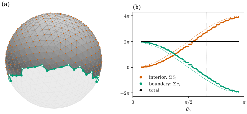
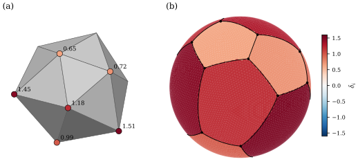

40.2 The Discrete Gauss–Bonnet Theorem
Goals
- 닫힌 simplicial surface에서 \(\sum_i\delta_i = 2\pi\chi\)를 triangle 내각의 합과 incidence의 셈만으로 증명하고, 이것이 근사가 아니라 모든 mesh에서 정확한 항등식임을 설명할 수 있다.
- boundary가 있는 판을 증명하고, boundary vertex의 \(\pi - \Theta_i\)를 boundary polygon이 꺾이는 각으로 읽어 smooth Gauss–Bonnet theorem with boundary와 항별로 대응시킬 수 있다.
- Descartes's theorem과 vertex의 Gauss image들이 sphere를 덮는 모습을 연결할 수 있다.
- mesh의 sanity check, 그리고 “mesh를 평면에 펴려면 어디를 잘라야 하는가”에 정리를 쓸 수 있다.
Prerequisites
- Section 40.1: angle defect Definition 40.1.1, Gauss image Proposition 40.1.7, \(\chi\)의 불변성 Theorem 40.1.5.
- Chapter 33: \(3n_2 = 2n_1 - n_1^\partial\) Proposition 33.4.19, boundary는 loop들의 합 Proposition 33.4.8, \(\chi = 2 - 2g\) (33.4.1).
- Chapter 39: Gauss–Bonnet theorem Theorem 39.4.2, with boundary Theorem 39.4.4와 그 Proof sketch(Section 39.4).
- Track 1: Theorem 31.2.4(같은 진술, Track 1 수준).
Motivation
Section 40.1의 Implementation 상자는 angle defect의 합이 icosphere에서 \(4\pi\), torus mesh에서 \(0\), planar grid의 boundary에서 \(2\pi\)라는 것을 보여 주었다. smooth surface에서는 이것이 Gauss–Bonnet theorem이었다(Theorem 39.4.2). 그 증명은 두 단계였다. 작은 곡선 삼각형마다의 local Gauss–Bonnet(analysis)과, 그것들을 모두 더하는 셈(combinatorics)이다(Section 39.4). mesh에서는 첫 단계가 “평면 triangle의 내각의 합은 \(\pi\)”로 바뀌고, 둘째 단계는 그대로 남는다. 그래서 discrete 판은 근사 없이 정확한 정리가 된다 [CMU-DDG L16] slide 17.
The Discrete Gauss–Bonnet Theorem
Theorem 40.2.1 (discrete Gauss–Bonnet theorem). \(\mathcal{K}\)가 boundary가 없는 유한 simplicial surface이고, vertex마다 점 \(\mathbf{x}_i \in \R^3\)를 주어 모든 triangle이 퇴화하지 않는다고 하자(예: discrete immersion). 그러면
이다. \(\mathcal{K}\)가 connected이고 orientable이며 genus가 \(g\)이면 우변은 \(2\pi(2 - 2g)\)이다.
Proof idea: 모든 corner angle의 합을 vertex마다 묶어 세고 face마다 묶어 센다.
Proof. 모든 (vertex, 그 vertex를 포함하는 face) 쌍의 corner angle을 더한 값 \(\Sigma\)를 두 가지로 센다. vertex마다 묶으면 \(\Sigma = \sum_i\Theta_i\)이다. face마다 묶으면, 퇴화하지 않은 평면 triangle의 세 내각의 합은 \(\pi\)이므로 \(\Sigma = \pi n_2\)이다. boundary가 없으므로 모든 vertex가 interior이고(Proposition 33.4.8), (40.1.1)에서
\[ \sum_i\delta_i = 2\pi n_0 - \sum_i\Theta_i = 2\pi n_0 - \pi n_2 \]
이다. Proposition 33.4.19의 \(3n_2 = 2n_1\)에서 \(-\pi n_2 = 2\pi n_2 - 3\pi n_2 = 2\pi n_2 - 2\pi n_1\)이므로 \(\sum_i\delta_i = 2\pi(n_0 - n_1 + n_2) = 2\pi\chi\)이다. 마지막 문장은 (33.4.1)이다.
이 정리가 말하는 것. 왼쪽은 mesh의 모양(각)에서 오고, 오른쪽은 개수만 센다. 둘이 언제나 같다. 한 vertex를 뾰족하게 만들면 이웃 vertex들의 angle defect가 그만큼 줄어든다. Section 39.4의 Proof sketch와 비교하면 2단계의 셈이 글자 그대로 같다. 1단계의 \(\int_TK\,dA + \int_{\partial T}\kappa_g\,ds\)는 평평한 triangle에서 \(0\)이고, curvature는 모두 vertex의 \(\delta_i\)로 옮겨 갔다.
Remark 40.2.2 (what the proof uses). 증명에 쓰인 것은 (a) triangle마다 내각의 합이 \(\pi\)라는 것, (b) 모든 vertex의 link가 cycle이고 모든 edge가 triangle 둘에 속한다는 것(Proposition 33.4.19)뿐이다. orientation은 쓰지 않았으므로 orientable이 아닌 닫힌 surface에서도 성립한다. 예를 들어 vertex 여섯, triangle 열 개로 된 real projective plane의 triangulation(\(\chi = 1\))은 vertex를 \(\R^3\)에 아무렇게나 놓아도(triangle이 퇴화하지 않으면) 합이 \(2\pi\)다(verify에서 확인). \(\mathbb{R}^3\)에 놓였는지도 쓰지 않았다. 각은 edge length만으로 정해지므로(Proposition 38.6.1), 모든 triangle에서 strict triangle inequality를 만족하는 edge length만 주어도 성립한다. 반대로 (a)가 없으면 깨진다(아래 Non-example 40.2.13). 강의 슬라이드는 볼록 다면체에서 “angle defect = Gauss image의 넓이”로부터 \(4\pi\)를 추측하게 한 뒤 일반적인 진술로 넘어간다 [CMU-DDG L16] slides 13, 17. 여기서는 순서를 바꾸어 셈으로 먼저 증명하고, Gauss image의 그림은 Remark 40.2.11에서 본다.
Example 40.2.3 (closed running examples).
(a) regular tetrahedron \(4\cdot\pi\), octahedron \(6\cdot\tfrac{2\pi}{3}\), icosahedron \(12\cdot\tfrac\pi3\), unit cube \(8\cdot\tfrac\pi2\)는 모두 \(4\pi = 2\pi\cdot2\)이다(Example 40.1.2). icosphere(level)도 모든 level에서 \(4\pi\)이고, 작은 \(\delta_i\)가 많아질 뿐이다. (b) torus_mesh(2, 0.8, 24, 48)은 \(\chi = 0\)이다. 바깥쪽 절반의 vertex(\(\delta_i \gt 0\))의 합 \(12.4587\)과 안쪽 절반(\(\delta_i \lt 0\))의 합 \(-12.4587\)이 반올림 오차 안에서 정확히 상쇄된다. smooth torus에서 \(\pm4\pi\)가 상쇄되던 것(Example 39.4.3(c))의 discrete 판이다. 바깥쪽 합은 smooth 바깥 절반의 \(4\pi = 12.566\)과 조금 다르다. \(\delta_i\) 하나하나는 dual cell 위의 적분의 근사일 뿐이고, 정확한 것은 전체의 합이다. (c) dgmesh.genus2_mesh(0.16)(marching tetrahedra로 만든 genus 2 mesh, \((n_0, n_1, n_2) = (4032, 12102, 8068)\))은 넓이가 \(4\times10^{-11}\)인 가는 triangle까지 있지만 \(\sum\delta_i/2\pi = -2.0000000000\)이다.
Verification: verify/v-40-2-discrete-gauss-bonnet.py
Example 40.2.4 (equilateral meshes). 모든 triangle이 정삼각형이면 vertex \(i\)의 angle defect는 \(\delta_i = 2\pi - \deg(i)\tfrac\pi3 = (6 - \deg i)\tfrac\pi3\)이다. 그러면 (40.2.1)은 \(\sum_i(6 - \deg i) = 6\chi\)가 되고, 이것은 Chapter 33이 개수만으로 증명한 (33.4.2)와 같은 식이다. Chapter 33은 이 일치가 우연이 아니라고 예고했다(Proposition 33.4.23 뒤). icosahedron에서는 \(12\cdot(6 - 5) = 12 = 6\cdot2\)이다. 일반적인 mesh에서는 valence만으로는 정해지지 않고, 각이 그 몫을 맞춘다.
Corollary 40.2.5 (the total angle defect does not change under deformation). 같은 닫힌 simplicial surface 위의 두 vertex 배치 \(\mathbf{x}\), \(\mathbf{y}\)가 모두 퇴화한 triangle을 갖지 않으면 \(\sum_i\delta_i(\mathbf{x}) = \sum_i\delta_i(\mathbf{y})\)이다.
Proof. 두 합 모두 Theorem 40.2.1에 의해 \(2\pi\chi(\mathcal{K})\)이고, \(\chi\)는 \(\mathcal{K}\)의 개수만으로 정해진다.
vertex를 움직여도 \(\sum\delta_i\)가 변하지 않으므로, vertex 위치에 대한 gradient는 \(0\)이다. 그 해석은 Section 41.2 [확인 필요: Chapter 41 미작성 — 참조 번호 확정 필요]에서 다른 curvature의 gradient와 함께 쓴다. Exercise 40.2.5는 genus 2 mesh의 vertex를 크게 흔들어도(triangle이 접힐 만큼) 합이 \(-4\pi\)에서 움직이지 않음을 확인한다.
Surfaces with Boundary
boundary가 있으면 boundary vertex는 \(\pi - \Theta_i\)로 센다(Definition 40.1.1). 이 값을 \(\tau_i := \pi - \Theta_i\)로도 쓰자. 평면의 polygon을 triangle로 나눈 mesh에서 \(\tau_i\)는 boundary polygon의 exterior angle, 곧 진행 방향이 꺾이는 부호 있는 각이다. 볼록한 꼭짓점에서 양수, 오목한 꼭짓점에서 음수, 꺾이지 않는 점에서 \(0\)이다. 휘어진 mesh에서도 \(\tau_i\)는 face들을 vertex 둘레로 평면에 펼쳤을 때 boundary가 꺾이는 각이다.
Theorem 40.2.6 (discrete Gauss–Bonnet theorem with boundary). \(\mathcal{K}\)가 유한 simplicial surface with boundary이고 Theorem 40.2.1처럼 모든 triangle이 퇴화하지 않는다고 하자. interior vertex의 집합을 \(\mathcal{V}^\circ\), boundary vertex의 집합을 \(\mathcal{V}^\partial\)라 하면
이다(\(\tau_i = \pi - \Theta_i\)). connected이고 orientable이며 genus \(g\), boundary loop \(b\)개이면 \(\chi = 2 - 2g - b\)이다.
Proof. Theorem 40.2.1의 증명처럼 \(\sum_i\Theta_i = \pi n_2\)이다. interior vertex 수를 \(n_0^\circ\), boundary vertex 수를 \(n_0^\partial\)라 하면 왼쪽은 \(2\pi n_0^\circ + \pi n_0^\partial - \pi n_2\)이다. boundary edge 수를 \(n_1^\partial\)라 하면 Proposition 33.4.19에서 \(3n_2 = 2n_1 - n_1^\partial\)이고, Proposition 33.4.8에서 boundary는 서로 만나지 않는 cycle들이므로 \(n_0^\partial = n_1^\partial\)이다. 그러면
\[ \begin{aligned} 2\pi\chi &= 2\pi n_0 - 2\pi n_1 + 2\pi n_2 = 2\pi n_0 - \pi(3n_2 + n_1^\partial) + 2\pi n_2 \\ &= 2\pi n_0^\circ + 2\pi n_0^\partial - \pi n_0^\partial - \pi n_2 = 2\pi n_0^\circ + \pi n_0^\partial - \pi n_2 \end{aligned} \]
이고 왼쪽과 같다. \(\chi = 2 - 2g - b\)는 Chapter 33의 진술이다((33.4.1) 뒤).
smooth 판((39.4.2))과 항별로 맞대어 보자. \(\int_SK\,dA\)의 자리에 interior vertex의 \(\sum\delta_i\)가 있다. \(\int_{\partial S}\kappa_g\,ds + \sum_j\varepsilon_j\)의 자리에 boundary vertex의 \(\sum\tau_i\)가 있다. boundary edge는 face 안의 선분이라 surface 안에서 곧고(\(\kappa_g = 0\)), boundary의 꺾임은 모두 vertex의 exterior angle \(\tau_i\)로 몰린다.
Example 40.2.7 (planar meshes and the hemisphere).
(a) 평면의 polygon을 triangle로 나눈 mesh에서는 모든 interior vertex가 \(\delta_i = 0\)이고 \(\chi = 1\)이므로 (40.2.2)는 \(\sum_{i\in\mathcal{V}^\partial}\tau_i = 2\pi\)가 된다. boundary polygon의 exterior angle의 합이 \(2\pi\)라는 것, 곧 rotation index theorem(Theorem 5.6.11)의 polygon 판이다. 5×5 grid에서는 네 모서리가 \(\tfrac\pi2\)씩이고 변 위의 vertex는 \(0\)이다. (b) icosphere(3)에서 세 vertex가 모두 \(z \ge 0\)인 face를 모은 hemisphere(vertex 337개, \(\chi = 1\))에서 interior vertex의 \(\sum\delta_i = 5.6526\), boundary의 \(\sum\tau_i = 0.6305\)이고 합이 \(2\pi\)다. smooth hemisphere는 \(2\pi + 0\)이었다(Example 39.4.5). mesh의 boundary는 적도를 따라 지그재그로 가서 \(\tau_i\)가 \(0\)이 아니고, 그만큼 안쪽의 합이 \(2\pi\)에서 모자란다.
Verification: verify/v-40-2-discrete-gauss-bonnet.py
Example 40.2.8 (discrete polar caps).
icosphere(3)에서 세 vertex의 colatitude가 모두 \(\theta_0\) 이하인 face를 모은 cap(lib/ddg40.py의 icosphere_cap)은 아래에서 쓰는 모든 \(\theta_0\)에서 disk다(\(\chi = 1\)). \(\theta_0 = \tfrac{2\pi}{3}\)이면 vertex 481개 가운데 42개가 boundary에 있고, interior의 \(\sum\delta_i = 8.5710\), boundary의 \(\sum\tau_i = -2.2878\)이며 합은 \(2\pi\)다. smooth cap의 두 항은 \(3\pi = 9.4248\)과 \(-\pi\)였다((39.4.3)). discrete cap의 boundary는 colatitude \(1.952\)와 \(2.094\) 사이를 오가므로 smooth cap보다 조금 작다.
Verification: verify/v-40-2-discrete-gauss-bonnet.py
Figure 40.2.1로 보자. 왼쪽 (a)는 \(\theta_0 = \tfrac{2\pi}{3}\)의 cap을 약간 아래에서 본 것이다. 회색이 cap의 face, 주홍 점이 interior vertex, 초록 꺾은선이 boundary polygon이다. boundary vertex 가운데 채운 초록 점은 \(\tau_i \gt 0\)(cap 쪽으로 꺾임, 28개), 빈 점은 \(\tau_i \lt 0\)(14개)이다. 오른쪽 (b)는 \(\theta_0\)를 240개 값으로 바꾸며 세 합을 그린 것이다. 주홍 점(interior의 \(\sum\delta_i\))은 계단 모양으로 \(0\)에서 \(4\pi\)로 오르고, 초록 점(boundary의 \(\sum\tau_i\))은 \(2\pi\)에서 \(-2\pi\)로 내려간다. 계단 하나는 vertex 한 ring이 boundary에서 interior로 넘어가는 순간이다. 그 순간 주홍이 오른 만큼 초록이 정확히 내려가서, 검은 점(합)은 모든 \(\theta_0\)에서 \(2\pi\)에 있다. 가는 점선은 Chapter 39의 smooth cap의 두 항이다(Figure 39.4.1(b)). discrete 점들이 그 근처를 따라가지만, 맞는 것은 합뿐이고 각 항은 근사다.

icosphere(3)(unit sphere, vertex 642개)의 discrete polar cap, 곧 세 vertex의 colatitude가 \(\theta_0\) 이하인 face들. (a) \(\theta_0 = \tfrac{2\pi}{3}\)의 cap, (b) \(\theta_0 \in [0.25, \pi - 0.15]\)의 240개 값에서 (40.2.2)의 두 항과 합.
읽는 법: (a) 진한 회색이 cap, 옅은 회색이 나머지 sphere, 주홍 점이 interior vertex, 초록 선이 boundary edge, 채운 초록 점이 \(\tau_i \gt 0\), 빈 초록 점이 \(\tau_i \lt 0\)인 boundary vertex다. (b) 주홍은 interior의 \(\sum\delta_i\), 초록은 boundary의 \(\sum\tau_i\), 검정은 합이다. 같은 색의 점선은 smooth cap의 \(2\pi(1 - \cos\theta_0)\)와 \(2\pi\cos\theta_0\), 회색 세로 점선은 \(\theta_0 = \tfrac{2\pi}{3}\)이다.
볼 것: 합은 모든 cap에서 \(2\pi\)와 \(10^{-11}\) 안에서 같다. \(\theta_0 = \tfrac{2\pi}{3}\)에서 두 항은 \(8.5710\)과 \(-2.2878\)이다. 주홍이 계단처럼 오를 때마다 초록이 같은 만큼 내려간다.
본문과의 연결: Theorem 40.2.6, Example 40.2.8. smooth 판은 Figure 39.4.1이다.Corollary 40.2.9 (discrete local Gauss–Bonnet). mesh의 face 몇 개를 모은 부분 \(D\)가 simplicial disk이면(\(\chi(D) = 1\)), \(D\)의 interior vertex의 angle defect의 합은 \(2\pi - \sum_{v\in\partial D}\tau_v^D\)이다. 여기서 \(\tau_v^D = \pi - \sum_{f\in D,\,f\ni v}\theta_v^f\)는 \(D\)의 face만 세어 잰 boundary의 꺾임이다.
Proof. \(D\) 자체가 simplicial surface with boundary이므로 Theorem 40.2.6에 \(\chi = 1\)을 넣는다. \(D\)의 interior vertex에서 \(D\)의 face들은 원래 mesh의 그 vertex의 face 전부이므로 \(\delta_v\)는 원래 값과 같다.
곧 disk 안에 몰린 curvature는 경계를 한 바퀴 돌며 잰 꺾임만으로 정해진다. smooth surface에서 이 양은 경계를 따라 parallel transport한 vector가 도는 각(holonomy)이었다(Theorem 0.5.8의 Proof idea). mesh의 판은 Chapter 45의 discrete connection에서 쓴다(Chapter 45 [확인 필요: Chapter 45 미작성 — 참조 번호 확정 필요]).
Convex Polyhedra: Descartes's Theorem
Corollary 40.2.10 (Descartes's theorem). compact convex set \(P \subseteq \R^3\)의 interior가 비어 있지 않고 그 boundary가 닫힌 simplicial surface의 image로 삼각분할되어 있으면 angle defect의 합은 \(4\pi\)이다.
Proof. interior point \(o\)를 하나 잡으면 \(\partial P\)에서 \(S^2\)로 가는 사상 \(p \mapsto (p - o)/\abs{p - o}\)는 homeomorphism이다(\(o\)에서 나가는 반직선은 compact convex set의 boundary를 정확히 한 번 지난다. 이 사실은 받아들인다). 그래서 이 simplicial surface는 sphere의 triangulation이고 \(\chi = 2\)이다(Theorem 40.1.5). Theorem 40.2.1에서 \(\sum\delta_i = 4\pi\)이다.
Remark 40.2.11 (a proof by Gauss images). 같은 결론을 Gauss map으로 볼 수도 있다(Proof sketch 수준으로 쓴다). unit vector \(u\)마다 \(\inner{u}{\cdot}\)을 \(P\) 위에서 최대로 하는 점들을 보자. 거의 모든 \(u\)에서 그 점은 꼭짓점 하나이고(\(u\)가 face normal이거나 이웃한 두 face normal 사이의 대원 호 위에 있을 때만 여러 점이 최대가 된다), 꼭짓점 \(\mathbf{x}_i\)가 최대라는 것은 모든 이웃 \(j\)에서 \(\inner{u}{\mathbf{x}_j - \mathbf{x}_i} \le 0\)이라는 것, 곧 \(u \in P_i\)라는 것이다(Proposition 40.1.7의 \(P_i\)). 그러므로 꼭짓점들의 Gauss image \(P_i\)는 경계를 빼면 서로 겹치지 않고 sphere를 덮으며, 넓이를 더하면 \(\sum_i\delta_i = \operatorname{area}(S^2) = 4\pi\)이다. 강의 슬라이드가 Descartes's theorem을 추측하게 하는 방법이 이것이다 [CMU-DDG L16] slide 13. smooth surface에서도 ovaloid의 Gauss map은 \(S^2\)을 한 번 덮어 \(\int K\,dA = 4\pi\)이다. 같은 생각은 Section 40.4의 Steiner formula에서 다시 쓴다.
Figure 40.2.2가 이것을 보인다. 왼쪽 (a)는 icosahedron의 꼭짓점을 원점에서 \(0.82\)배에서 \(1.18\)배 사이로 무작위로 밀고 당긴 convex polyhedron이고(모든 bending angle이 \(0.466\) 이상), 보이는 꼭짓점마다 angle defect를 색과 숫자로 적었다. 오른쪽 (b)는 같은 방향에서 본 unit sphere다. 점 \(u\)마다 \(\inner{u}{\mathbf{x}_i}\)를 최대로 하는 꼭짓점의 \(\delta_i\)로 칠했다. 검은 호는 이웃한 face normal을 잇는 대원 호, 곧 \(P_i\)들의 변이다. (a)의 가운데 꼭짓점(\(1.18\))은 (b)의 가운데 칸이 되고, 위쪽의 작은 \(0.65\)는 위쪽의 작은 칸이 된다. 열두 칸의 넓이가 열두 angle defect이고, 칸들은 빈틈없이 sphere를 덮는다.

dgmesh.icosahedron()의 꼭짓점 \(k\)를 \(1 + 0.18u_k\)배(\(u_k\)는 \([-1, 1]\)의 균등 난수, seed 3) 한 convex polyhedron(lib/ddg40.py의 perturbed_icosahedron)과 그 꼭짓점들의 Gauss image. (a) polyhedron, (b) unit sphere의 tiling. 두 패널은 같은 방향에서 그렸다.
읽는 법: (a) 회색이 face, 원의 색과 숫자가 그 꼭짓점의 \(\delta_i\)다. (b) 점 \(u\)의 색은 \(\inner{u}{\mathbf{x}_i}\)를 최대로 하는 꼭짓점의 \(\delta_i\), 검은 점은 face normal, 검은 호는 edge를 공유하는 face의 normal을 잇는 대원 호다. 색 막대는 두 패널에 공통이고 \(0\)이 흰색이다.
볼 것: 열두 \(\delta_i\)는 \(0.648\)에서 \(1.509\)까지 다르지만 합은 \(4\pi = 12.5664\)이다. (b)의 칸의 넓이는 각 \(\delta_i\)와 \(0.011\) 안에서 같다(sphere를 그린 mesh의 해상도).
본문과의 연결: Corollary 40.2.10, Remark 40.2.11, Proposition 40.1.7. 돌려 볼 수 있는 interactive version이 있다.Using the Theorem
Sanity check. (40.2.1)은 mesh의 모양에 무관하므로, 합이 \(2\pi\chi\)가 아니면 mesh 자료 쪽이 틀린 것이다. 예를 들어 개수로 센 \(\chi\)와 각으로 센 \(\sum\delta_i/2\pi\)가 다르면, 퇴화한 triangle이나 link가 cycle이 아닌 vertex가 있거나, boundary vertex를 interior로 세었을 가능성이 크다. 아래 Implementation 상자가 이 검사를 한다.
Cutting before flattening. mesh를 평면에 펴는 문제(texture parametrization, Section 31.6)에도 정리가 바로 쓰인다.
Proposition 40.2.12 (where a mesh must be cut). mesh의 face들을 평면으로 보내는 연속 사상이 face마다 isometry(rigid motion)이고 interior vertex \(v\) 근처에서 injective이면 \(\delta_v = 0\)이다. 따라서 \(\delta_v \neq 0\)인 vertex는 펼친 그림에서 반드시 boundary(자른 곳)에 있다.
Proof. \(v\)의 star의 face들은 isometry로 옮겨지므로 그림에서 \(v\)의 상 \(p\) 둘레에는 각 \(\theta_v^f\)인 부채꼴들이 놓인다. link의 순서로 face를 \(f_1, \dots, f_m\)이라 하자. 연속이므로 \(f_k\)와 \(f_{k+1}\)의 상은 공유 edge의 상인 \(p\)에서 나가는 반직선을 함께 가진다. 두 부채꼴이 그 반직선의 같은 쪽에 있으면 \(p\) 근처에서 겹쳐 injective에 어긋나므로 반대쪽에 있다. 그래서 \(f_1\)의 첫 edge의 방향에서 시작해 부채꼴을 차례로 돌면 방향은 한쪽으로 \(\theta_v^{f_1}, \theta_v^{f_2}, \dots\)만큼씩 돌고, \(f_m\)의 둘째 edge는 다시 \(f_1\)의 첫 edge이므로 돈 각의 합 \(\Theta_v\)는 \(2\pi\)의 양의 정수배다. \(2\pi\cdot2\) 이상이면 \(p\) 둘레를 두 번 이상 덮어 서로 다른 face의 점이 같은 점으로 가므로 다시 injective에 어긋난다. 따라서 \(\Theta_v = 2\pi\), 곧 \(\delta_v = 0\)이다.
예를 들어 unit cube는 모든 꼭짓점이 \(\delta = \tfrac\pi2\)이므로, 펼친 그림(전개도)을 만들려면 여덟 꼭짓점이 모두 자르는 선 위에 있어야 한다. 꼭짓점 여덟을 잇는 spanning tree(edge 7개)를 따라 자르면 disk가 되고, 그 boundary의 꺾임의 합은 Theorem 40.2.6에서 정확히 \(2\pi\)다(Exercise 40.2.3). 반대로 거의 평평한 곳은 자르지 않아도 거의 isometry로 펼 수 있다. 실제 parametrization 방법은 자른 뒤에 남는 작은 \(\delta_v\)를 넓이나 각의 왜곡으로 흩어 놓는다(Section 31.6).
Non-example 40.2.13 (curved faces). icosahedron의 각 face를 sphere로 투영해 spherical triangle로 바꾸자(세 변은 대원 호). 이 “mesh”의 vertex에는 spherical triangle 다섯 개가 모이고, 대칭으로 각이 \(\tfrac{2\pi}{5}\)씩이라 \(\Theta = 2\pi\)이다. 같은 식으로 셈하면 모든 vertex에서 “\(\delta = 0\)”이고 합은 \(0 \neq 4\pi\)이다. 깨진 것은 Remark 40.2.2의 (a)다. spherical triangle의 내각의 합은 \(3\cdot\tfrac{2\pi}{5} = \pi + \tfrac\pi5\)이고, 넘치는 \(\tfrac\pi5\)가 그 face의 넓이(Girard's formula, Lemma 40.1.6)다. 스무 face의 넓이를 더하면 \(4\pi\)가 다시 나온다. curvature가 vertex에서 face로 옮겨 간 것이다. Theorem 40.2.1의 curvature를 vertex에만 둔다는 것은 face가 평평하다는 가정과 같다.
Verification: verify/v-40-2-discrete-gauss-bonnet.py
Summary
- 닫힌 simplicial surface에서 \(\sum_i\delta_i = 2\pi\chi\)이다. 증명은 corner angle의 합을 vertex마다와 face마다 세는 것과 \(3n_2 = 2n_1\)뿐이다(Theorem 40.2.1).
- vertex를 어떻게 움직여도(triangle이 퇴화하지 않는 한) 합은 같다. orientation도 필요 없다(Remark 40.2.2, Corollary 40.2.5).
- boundary가 있으면 boundary vertex의 꺾임 \(\tau_i = \pi - \Theta_i\)를 더해 \(2\pi\chi\)이다. 이것이 smooth 판의 \(\int\kappa_g\,ds + \sum\varepsilon_j\)의 자리다(Theorem 40.2.6).
- convex polyhedron에서는 \(4\pi\)이고(Descartes), 꼭짓점들의 Gauss image가 sphere를 덮는다(Corollary 40.2.10, Remark 40.2.11).
- \(\delta_v \neq 0\)인 vertex는 평면에 펼 때 반드시 잘라야 한다(Proposition 40.2.12). face가 휘어 있으면 정리가 깨진다(Non-example 40.2.13).
다음 절에서는 scalar 대신 vector를 적분한다. Gaussian curvature만이 아니라 mean curvature도 normal과 곱해 \(H\mathbf{N}\)으로 쓰면 normal의 방향 선택에 무관해지고, 그것을 dual cell 위에서 적분하면 cotan formula가 다시 나온다.
Exercises
Exercise 40.2.1 ★ 모든 edge의 길이가 \(1\)인 triangular prism(양끝이 정삼각형, 옆면이 정사각형 셋)의 옆면을 대각선으로 나눈 닫힌 mesh에서 각 vertex의 angle defect를 구하고 Theorem 40.2.1을 확인하여라. \(n_0, n_1, n_2\)도 세어라.
Solution
각 vertex에는 정삼각형 하나(\(\tfrac\pi3\))와 정사각형 둘(\(\tfrac\pi2\)씩, 대각선이 지나면 둘로 나뉘지만 합은 같다)이 모이므로 \(\Theta = \tfrac\pi3 + \pi = \tfrac{4\pi}{3}\), \(\delta = \tfrac{2\pi}{3}\)이다. 여섯 vertex의 합은 \(4\pi\)이다. 개수는 vertex 6, edge \(9 + 3 = 12\)(원래 edge 9개와 대각선 3개), triangle \(2 + 6 = 8\)이므로 \(\chi = 6 - 12 + 8 = 2\)이고 \(2\pi\chi = 4\pi\)와 맞는다.
Exercise 40.2.2 ★★ 평면의 simple polygon을 triangle로 나눈 mesh(새 vertex를 안쪽에 넣어도 된다)에서 Theorem 40.2.6이 “boundary의 exterior angle의 합 \(= 2\pi\)”가 됨을 보이고, 오목한 꼭짓점에서 \(\tau_i \lt 0\)임을 설명하여라. 꼭짓점이 \((0, 0), (2, 0), (2, 1), (1, 1), (1, 2), (0, 2)\)인 L자 polygon에서 \(\tau_i\)를 모두 구하여라.
Solution
평면 mesh의 interior vertex에서는 face들이 그 점의 근방을 한 번 덮으므로 \(\Theta_i = 2\pi\), \(\delta_i = 0\)이다. simple polygon의 triangulation은 disk이므로 \(\chi = 1\)이고, (40.2.2)는 \(\sum_{\partial}\tau_i = 2\pi\)가 된다. boundary vertex에서 \(\Theta_i\)는 polygon의 그 꼭짓점의 interior angle \(\beta_i\)(그 꼭짓점에 모인 triangle 각의 합)이므로 \(\tau_i = \pi - \beta_i\)는 exterior angle이다. 오목한 꼭짓점은 \(\beta_i \gt \pi\)라 \(\tau_i \lt 0\)이다. L자 polygon의 interior angle은 \((1, 1)\)에서 \(\tfrac{3\pi}{2}\), 나머지 다섯 꼭짓점에서 \(\tfrac\pi2\)이므로 \(\tau = -\tfrac\pi2\) 하나와 \(\tfrac\pi2\) 다섯이고, 합은 \(\tfrac{5\pi}{2} - \tfrac\pi2 = 2\pi\)이다. 이것은 Theorem 5.6.11에서 변이 직선(\(\kappa_s = 0\))인 경우다.
Exercise 40.2.3 ★★
unit cube의 mesh(unit_cube(), 정사각형마다 대각선 하나)를 cube의 edge 7개로 된 spanning tree를 따라 잘라 disk로 만든다. (a) 자른 mesh의 \(n_0, n_1, n_2\)와 \(\chi\)를 구하여라. (b) boundary vertex는 몇 개이고 \(\sum\tau_i\)는 얼마인가? (c) 자르는 edge가 6개뿐이면 왜 펼 수 없는가?
Solution
(a) 원래 mesh는 \((n_0, n_1, n_2) = (8, 18, 12)\)이다. tree의 edge \(k = 7\)개를 자르면 각 edge가 둘이 되어 \(n_1 = 25\)이고, tree를 따라 한 바퀴 도는 boundary는 edge \(2k = 14\)개, vertex \(14\)개짜리 loop가 된다. tree의 vertex 8개가 boundary vertex 14개로 바뀌므로 \(n_0 = 14\)이고 \(n_2 = 12\)이다. \(\chi = 14 - 25 + 12 = 1\)이다. (b) 14개이고, interior vertex가 없으므로(여덟 꼭짓점이 모두 boundary에 있다) (40.2.2)에서 \(\sum\tau_i = 2\pi\)이다. 원래의 각 꼭짓점의 \(\tfrac{3\pi}{2}\)는 그 꼭짓점의 사본들에 나뉘어 들어간다. (c) edge 6개로 된 forest는 여덟 꼭짓점을 모두 이을 수 없다(connected인 tree는 edge가 7개다). 자른 곳에 닿지 않은 꼭짓점이 있으면 그 꼭짓점은 interior vertex로 남고 \(\delta = \tfrac\pi2 \neq 0\)이므로 Proposition 40.2.12에 의해 isometry로 펼 수 없다. tree가 둘 이상으로 갈라져 있으면 잘라도 disk가 되지 않는다.
Exercise 40.2.4 ★ 참인지 거짓인지 말하고 이유를 써라. (a) 닫힌 mesh의 vertex 하나를 움직이면 \(\sum_i\delta_i\)가 바뀔 수 있다. (b) connected이고 orientable인 닫힌 mesh에서 모든 \(\delta_i \gt 0\)이면 그 mesh는 sphere의 triangulation이다. (c) genus 3인 닫힌 mesh의 angle defect의 합은 \(-8\pi\)이다. (d) 모든 \(\delta_i = 0\)인 닫힌 mesh는 없다.
Solution
(a) 거짓. Corollary 40.2.5. 그 vertex의 \(\delta\)와 이웃의 \(\delta\)가 바뀌지만 합은 그대로다. (b) 참. 합이 양수이므로 \(\chi = 2 - 2g \gt 0\), 곧 \(g = 0\)이다. (c) 참. \(2\pi(2 - 2\cdot3) = -8\pi\)이다. (d) 거짓. 합이 \(0\)이어야 하므로 \(\chi = 0\)(torus)이어야 하는데, 정사각형 \(3\times3\) 칸의 격자를 대각선으로 나누고 마주 보는 변을 붙인 torus의 triangulation(torus_mesh(R, r, 3, 3)과 같은 조합 구조)에 평평한 edge length(칸의 변 \(1\), 대각선 \(\sqrt2\))를 주면, 모든 vertex에 직각이등변 triangle 여섯 개가 각 \(\tfrac\pi2, \tfrac\pi4, \tfrac\pi4, \tfrac\pi2, \tfrac\pi4, \tfrac\pi4\)로 모여 \(\delta_i = 0\)이다. Remark 40.2.2대로 정리는 edge length만으로도 성립한다(이 metric이 \(\R^3\)에 실현되는지는 다른 문제다).
Exercise 40.2.5 ★
Coding. dgmesh.genus2_mesh(0.16)의 모든 vertex를 표준편차 \(0.01\)인 정규 난수로 세 번 연달아 움직이며(seed 1), 매번 가장 작은 corner angle, \(\delta_i\)의 범위, \(\sum\delta_i/2\pi\)를 출력하여라. 무엇이 바뀌고 무엇이 바뀌지 않는가?
Solution
V, F = dm.genus2_mesh(0.16)
rng = np.random.default_rng(1)
for step in range(4):
d = dm.angle_defect(V, F)
print(f"step {step}: min corner angle {dm.corner_angles(V, F).min():.2e}, delta in [{d.min():+.3f}, {d.max():+.3f}], "
f"sum / 2 pi = {round(d.sum() / (2 * np.pi), 10) + 0.0:+.10f}")
V = V + rng.normal(0, 0.01, V.shape) # move every vertex a little
step 0: min corner angle 4.12e-05, delta in [-0.512, +0.089], sum / 2 pi = -2.0000000000
step 1: min corner angle 9.06e-03, delta in [-5.292, +4.479], sum / 2 pi = -2.0000000000
step 2: min corner angle 9.21e-04, delta in [-7.016, +5.312], sum / 2 pi = -2.0000000000
step 3: min corner angle 1.95e-03, delta in [-7.641, +4.987], sum / 2 pi = -2.0000000000처음 mesh의 \(\delta_i\)는 \([-0.512, 0.089]\)이지만, marching tetrahedra가 만든 가는 triangle(가장 작은 각 \(4\times10^{-5}\))이 많아서 \(0.01\)의 움직임에도 triangle이 접히고 \(\delta_i\)가 \(-7.6\)에서 \(5.3\)까지 퍼진다(\(\abs{\delta_i} \gt 2\pi\)인 vertex도 생긴다. star가 접혀 각의 합이 크게 늘었다). 그래도 합은 매번 \(-2\cdot2\pi\)이다. triangle이 퇴화하지 않는 한 Theorem 40.2.1의 증명이 그대로이기 때문이다. 이렇게 접힌 mesh는 더 이상 discrete immersion이 아닐 수 있다. 그래서 \(\sum\delta_i\)는 mesh가 망가졌는지를 알려 주지 못한다. 그것을 보려면 개별 \(\delta_i\)나 face normal의 뒤집힘을 봐야 한다.